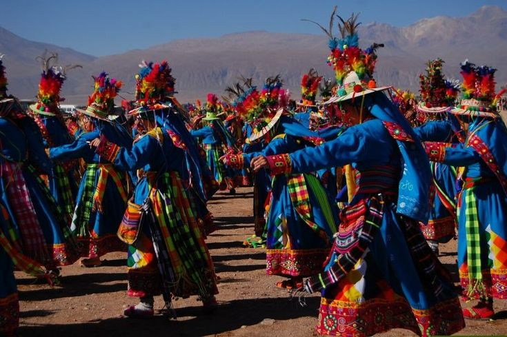

Lenguas Originarias
68 lenguas vivas
» Náhuatl: 1.7 millones de hablantes
» Maya: 860 mil hablantes
Fuente: INALI 2020
Patrimonio UNESCO
35 sitios protegidos
» 10 culturales
» 6 naturales
» 2 mixtos
Fuente: UNESCO 2023
Gastronomía
600+ platillos típicos
» 5 ingredientes patrimonio
» 18 rutas gastronómicas
Fuente: SECTUR